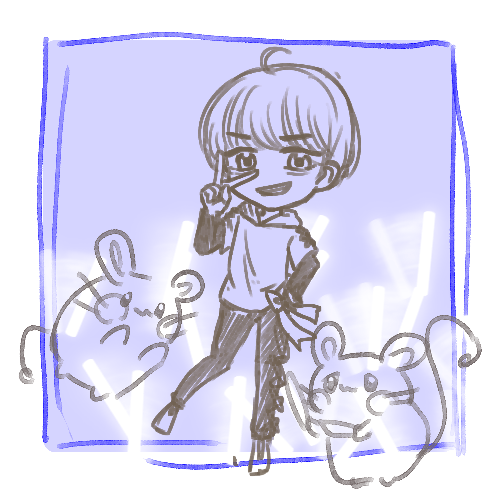
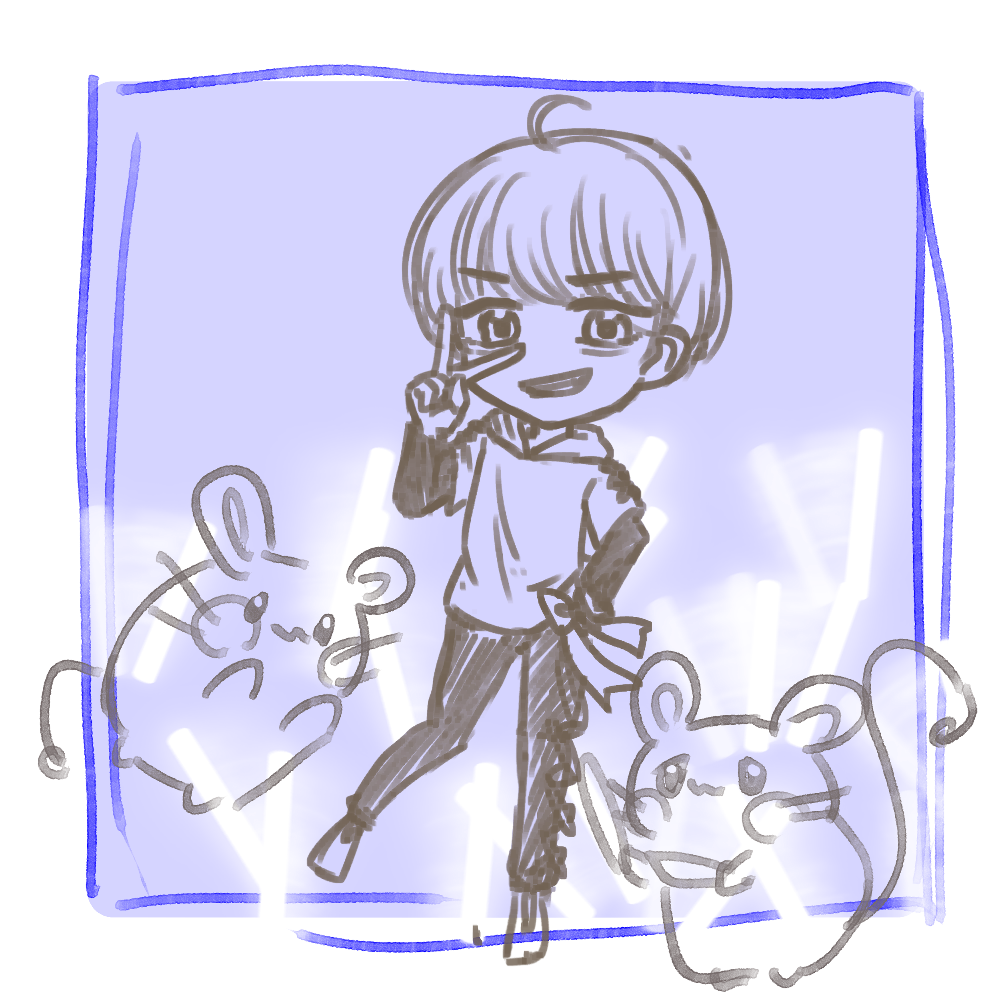
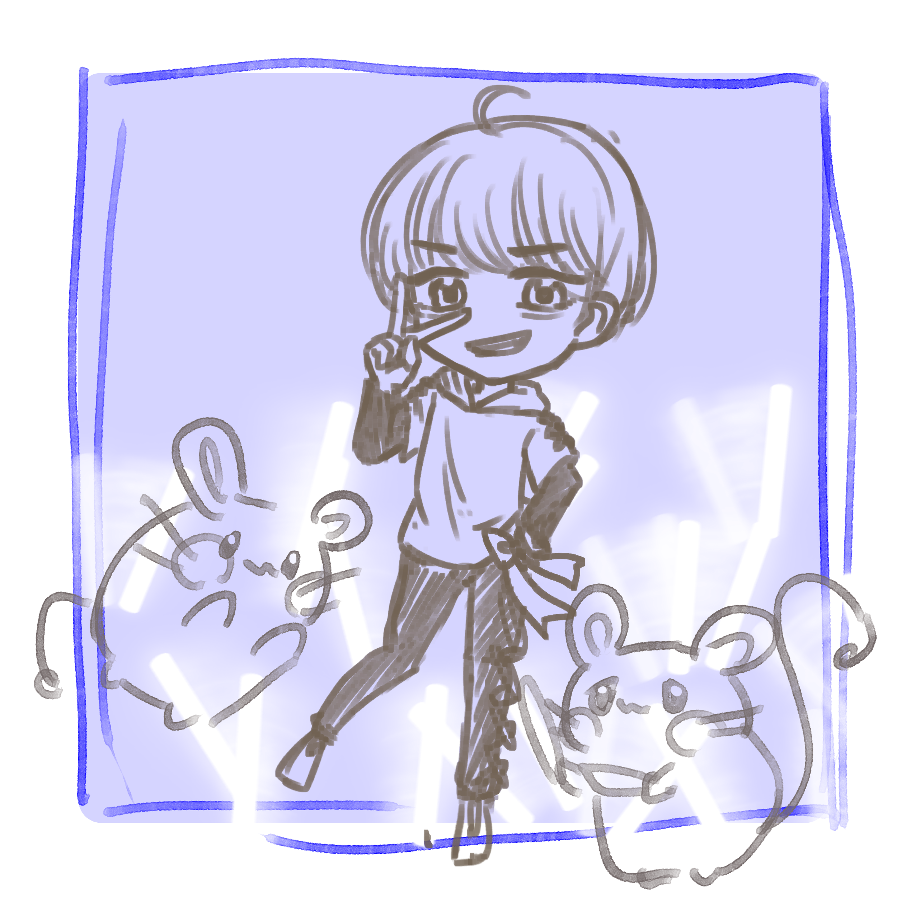

IM-デデンネ
でんき・フェアリータイプの生き物。本人の希望での選出で制作。
当人のイメージの「陽気」「元気」「ライブによく行く」を取り出し、
楽しそうな表情、小道具に反映しています。デデンネの表情にこだわりました。
サイリウムがたくさんある背景でライブの雰囲気を表しています。

でんき・フェアリータイプの生き物。本人の希望での選出で制作。
当人のイメージの「陽気」「元気」「ライブによく行く」を取り出し、
楽しそうな表情、小道具に反映しています。デデンネの表情にこだわりました。
サイリウムがたくさんある背景でライブの雰囲気を表しています。